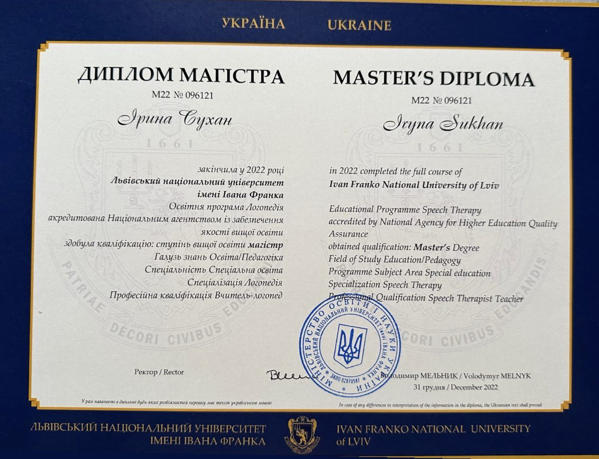
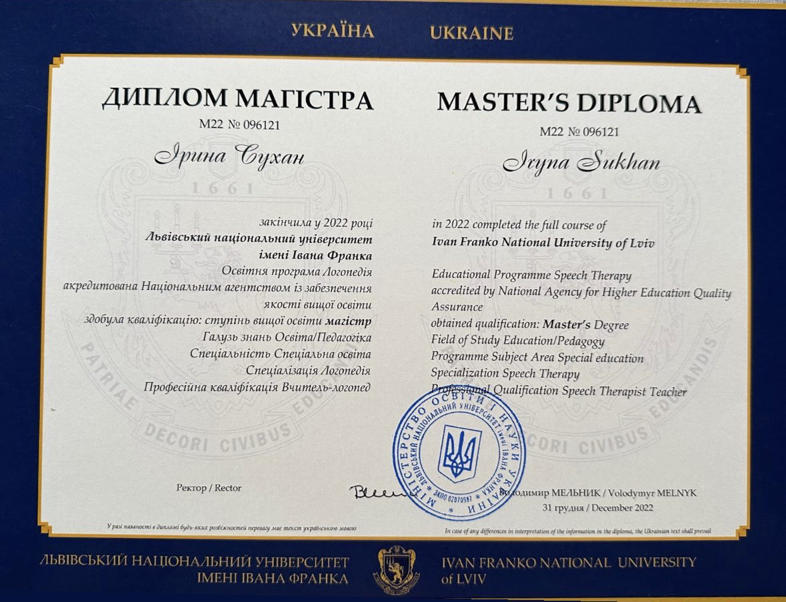

Микита
Запинки
Прозаймались ми трохи більше ніж 3 місяці, які дали свої результати. Прийшло розуміння можливих причин запинання та як це можна виправити. Як я розумію, Ірина розробила план по якому ми йшли й пропрацьовували певні аспекти, такі як: дихання, міміка, тощо. Заняття проходили цікаво, Ірина прислуховується до певних побажань та підлаштовується під запит. Наприклад, я така людина, якій розуміння як працює дихання, діафрагма та зв'язки допомагає при їх контролюванні. Ірина або розповідала як вони працюють, або скидувала посилання на інформацію. Я задоволений як й процессом, так і результатом
Ярослав
Дикція
Рекомендую всім, тому що на власному досвіді переконався у ефективності занять. За місяць часу розкрив блоки і зажатості м'язів обличчя про які навіть не здогадувався. Як результат легше стало спілкуватися фізично і психологічно дало певну розкованість. Також нові знання про те як правильно творяться звуки у нашому тілі і як користуватися голосовим апаратом дають перевагу. Це ті знання яким повинні вчити з дитинства. Однозначно рекомендую. І дякую викладачу за те що грамотно доносить ці знання.
Андрій
Запинки
Хочу подякувати за заняття. Майже рік ми займались, і скажу відверто, я вдячний за роботу зі мною, за результати, за те що відкрила очі на дихання, вимову, різні техніки для гарної вимови. Далі буду сам практикувати, оскільки робота не дає можливість спланувати і провести заняття. Для тих хто планує навчатися у Ірини, скажу наступне: чудовий вчитель, має терпіння, досвід, вміє знайти підхід, бачить слабкі місця і повторює матеріал стільки, поки не "дійде' ). З нею комфортно і легко навчатись, а ще вона приємний співрозмовник. Дякую, Іра, і бажаю хороших учнів і професійних досягнень.
Олег
Звук Р
Доброго дня. Хочу подякувати Вам за пройдений зі мною шлях від постановки до автоматизації звуку "р". Дуже грамотний та комплексний підхід логопеда до свого клієнта. Завдяки Ірині я зрозумів як керувати своїм язиком, а також навчився правильно дихати, і жодного разу не пошкодував, що займався саме з Вами. Зараз я на фінішні прямі щодо автоматизації, тому хто вагається чи соромиться, звертайтеся до Ірини, вона справжній професіонал в своїй справі. Рекомендую!!!😀😁🙂
Влад, 24 роки
Дикція, звуки С З
Если Вы попали на этот сайт, то Вы наверняка хотите прокачать свою речь в той или иной степени, как этого желал и я. Хоть Вы и должны понимать, что часть Вашего успеха зависит также и от Вас) Но я практически за месяц исправил то, что пытался сделать самостоятельно несколько лет. У меня был преподаватель Ирина - очень компетентная в своём деле, это помогает раскрыться психологически и при всём этом процесс обучения протекает очень легко и позитивно. Всем рекомендую!

Людмила
Міокореція
Добрий вечір, хочу Вам ще раз подякувати за чудовий резульат якого ми досягли😊 Я навіть не думала що за три місяці можна так змінити свої звички та гарно вимоляти звуки. Дуже сподобався Ваш підхід до занять, а особливо те, що домашнє індивідульно записуєте після кожного заняття на відео ( це дуже вилика праця). Звернулась я з проблемою неправильного положення язика та слабкістю кругового м‘яза рота( губи мої без додадкового напруження змикатись не хотіли🥲), ще коли мені поставили брекети я погано стала вимовляти шиплячі звуки. Кожного заняття ми поступово тренували губи та язик, деякі вправи були смішні, деякі важкі але я любила наші заняття час летів швидко… Натренуваши губи та поставивши язик на своє місце ми почали займатись шиплячими звуками, виконував домашнє регулярно результат довго себе чекати не заставив😊 я дуже задоволена результатом і щиро всім рекомендую Ірину, адже логопед - це не тільки постановка звуків😉

Мирослава
Дикція
Во-первых мне очень понравилось с Вами заниматься. Вы несете очень добрую и позитивную энергетику. Сразу располагаете к себе. Во-вторых, специалист своего дела. Я ведь сразу не сказала какие звуки я не выговариваю, а на диагностике Вы сразу их выявили.
Хороший подход с разным типом заданий, как на дикцию так и на дыхание. Ясное и понятное домашнее задание.
Все мое окружение заметило изменение в моей рече. Благодаря Вам я стала увереннее в разговорах, так уже нет проблем с произношением. Спасибо Вам большое) Рекомендую Вас каждому
Алена
Звук Р
Ира, привет!
Отправляю обратную связь Предыстория: у меня с детства не поставлен звук «р» = горловое произношение. За год до того, как начать заниматься,, у меня было несколько занятий с логопедом, но мне совсем не зашло, потому что в занятиях не было структуры и мне, честно, несильно хотелось на эти занятия ходить.
Но я попробовала прийти на консультацию и после нее я сразу решила, что буду заниматься именно здесь, потому что чувствуется профессиональный и добрый подход.
Отдельно отмечу, что именно для меня крутого в занятиях:
1. Есть понятная структура
2. Интересные, необычные задания, которые не только напрямую позволяют поставить звук, но и развивают мышление (сами вряд ли вы таким займётесь)
3. Подборка упражнений на те темы, которые мне интересны
4. Ну и поддержка)) Потому что для многих недочеты в речи — это прям комплекс, и нужно иногда простое человеческое «да ты сможешь, дружочек)» когда преподаватель уверен, что все получится, ты тоже автоматически становишься уверен в результате)
Теперь я говорю в обычной жизни прям с вибрацией (с)! Если уж Ира Сухан мне поставила звук «р», то вам она поможет справиться со всем. Только домашку делайте, ну хотя бы иногда :) и желательно регулярно🫶
Ксенія
Звук Р
Хочу висловити Вам, Ірина, велику Подяку за зроблену роботу зі мною, за Професійний підхід, за підтримку, терпіння, за велике серце.
Як вже говорила моє життя розділилось на до і Після. Моїй радості немає меж. Це не передати.
Вам бажаю успіху у Вашій Справі, надхнення, процвітання, реалізації задуманих планів. ♥️
З повагою, Ксенія
Р.S. Рррррчу, як справжня тигриця;))
Оля
Дикція
Я успішно пройшла співбесіду, тепер мене чекає технічне інтерв'ю.
Дякую за роботу зі мною.
Я звернулась із декількома запитами:
- скоригувати положення язика. Моя ортодонтка наполягала, що без цієї корекцій жодні брекети не дадуть мені довгострокового результату;
- заїкання. Мені було складно вимовляти деякі слова, я відчувала блок - намагалась почати вимовляти слово,, але не могла видати ані звуку. Я повторювала або протягувала деякі звуки у словах, намагаючись сказати хоча б щось.
- почати говорити більш повільно і виразно. Швидкість мовлення впливає на те, наскільки і приємною для співрозмовників і ефективною може бути комунікація.Тож я вирішила, що хочу звучати по-іншому і перестати ковтати частину слів коли говорю.
- покращити мій голос. Мій голос у записі видавався мені дуже писклявим і затисненим. Я хотіла змінити це.
Наші заняття були комплексні і багатопланові. Я тренувала м'язи язика, вчилась розслабляти голосові зв'язки, працювати з резонаторами, вправлялась у виразному і чіткому читанні. А ще ми мали трохи вправ на імпровізацію. Кожне заняття мало щось нове і час пролітав дуже швидко. За 4,5 місяці я навчилась правильно вдихати і підбирати повітря під час розмови. Тепер я говорю повільніше, а не кваплюсь кудись, неначе за мною вовки. Мій голос став більш об’ємний і тепер він мені подобається. Ми також відкоригували положення язика. Зараз я відчуваю значно менше стресу коли говорю, або починаю розмову з незнайомцем. Тепер мені не так лячно, що я не зможу вимовити якесь слово, бо навіть якщо не вдасться з першого разу, завжди можна спробувати вдруге. Наша співпраця була надзвичайно продуктивна і я досягла бажаних цілей. Рекомендую Ірину для всіх, хто хотів почати щось змінювати, але ще не наважився.
Добрий вечір, я дуже вам вдячна за той шлях, який ми пройшли. Ми використовували різноманітні методи та техніки, які допомогли мені краще контролювати вимову, поставили правильне дихання, працювали з опорою, яку тепер я автоматично використовую у повсякденному житті. Завдяки регулярним заняттям я стала більш впевнена у собі та не думаю чи зможу сказати те чи інше. Я з нетерпінням чекала наші заняття та формат дуже цікавий. Дякую за цей досвід, я дуже задоволена результатом ❤️
Іра, я тобі щиро вдячна за всю нашу роботу ❤️ Ти дуже класний логопед, класна і щира людина, з тобою приємно працювати🔥 Всі заняття насичені і корисні, з тобою я дійсно стала впевненішою, покращила свою вимову, навчилася правильно дихати і повільніше говорити. На моїх консультаціях ця швидкість дуже важлива для сприйняття інформації 😅. Дякую тобі, що ти робиш таку важливу роботу з голосом. Голос це дійсно важливо, це той інструмент який допомагає не тільки у роботі, а і у житті. Особисто для мене ти зробила мій світ зі сприйняття себе та мого голосу кращим ❤️ Дякую тобі 🫶🏻
Дарʼя
Заїкання
Я сьогодні заміняю адміністратора, обдзвонюю пацієнтів і комунікую з ними, я так переживала, але в мене виходить, трішки запинаюсь звісно, але взагалі супер, я дуже задоволена🥹😀 Дякую вам, я думаю наші заняття точно дають результат😉 Я відчуваю безмежне щастя, коли можу говорити🥹❤️
Олександра
Голос
Мені також подобається) вмію знаходити тепер те місце всередині, завдяки якому голос стає оксамитовим та хочеться ніби доторкнутися ✨
 
